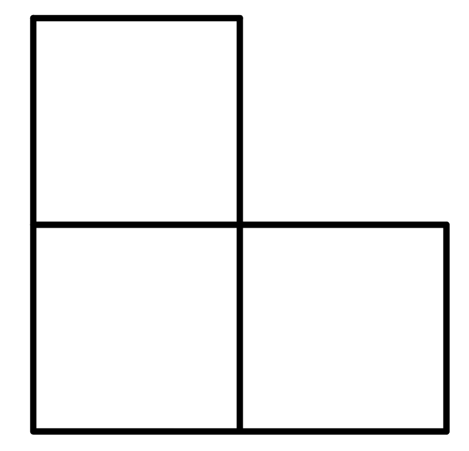
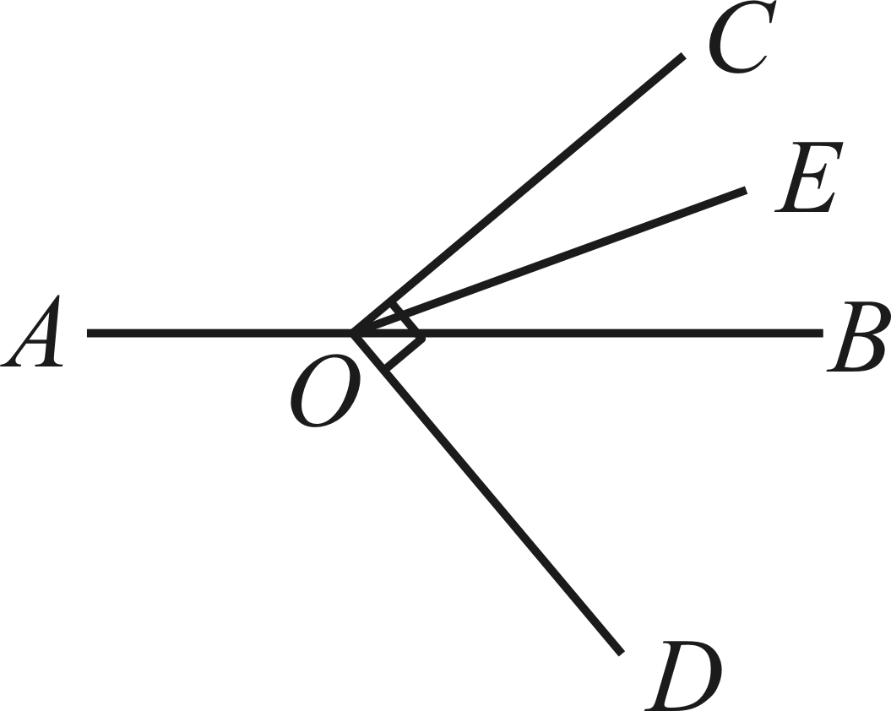
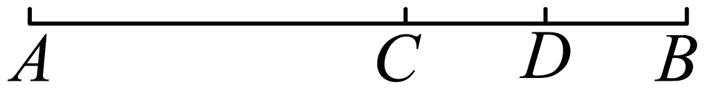
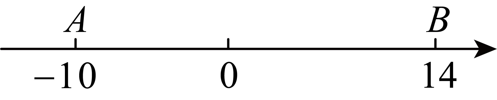

七年级数学上学期期末模拟卷·培优卷
【北师大版2024】
参考答案与试题解析
一、选择题（本大题共10小题，每小题3分，满分30分）
1．（25-26六年级上·全国·期末）数据划分成定量数据和定性数据两种，以下几种数据中，属于定性数据的是（ ）
A．性别 B．年龄
C．平均成绩 D．体重
【答案】A
【分析】本题考查了调查收集数据的过程与方法，熟练掌握统计数据分为定量数据与定性数据以及它们的定义是解题的关键．定量数据是以数量形式存在的数值型数据，定性数据是表示事物性质、类别的文字表述型数据．根据定量数据与定性数据的定义进行判断即可．
【详解】解：A、性别是定性数据，符合题意；
B、年龄是定量数据，不符合题意；
C、平均成绩是定量数据，不符合题意；
D、体重是定量数据，不符合题意；
故选：A．
2．（25-26七年级上·广东佛山·月考）如图，是由5个大小相同的正方体组成的立体图形，从左面看到的形状图是（ ）

A． B．
B． C．
C． D．
D．

【答案】D
【分析】本题考查了从不同方向看立体几何．根据立体几何图形的特点结合选项分析即可求解．
【详解】
解：根据题意，从左面看到的形状图是
故选：D．
3．（25-26七年级上·广西南宁·期中）中国是世界上最早使用负数的国家，战国时期李悝所著的《法经》中已使用负数．如果公元前600年记作−600年，则公元2025年记作（ ）
A．−2025年 B．2025年 C．−2625年 D．2625年
【答案】B
【分析】本题主要考查了正负数的实际应用，解题的关键是掌握正负数的意义．
根据题意，公元前记作负数，公元后记作正数，因此公元2025年应记作正数．
【详解】解：∵公元前600年记作−600年，
∴公元后年份应记作正数，
∴公元2025年记作+2025年，即2025年，
故选：B．
4．（25-26七年级上·黑龙江哈尔滨·期中）如果m=n，下列运用等式的性质进行的变形中，不正确的是（ ）
A．m+a=n+a B．m−a=n−a C．am=an D．ma=na
【答案】D
【分析】本题主要考查了等式的性质：等式两边同时加上或减去同一个数或整式，等式仍然成立；等式两边同时乘以一个数或式子等式仍然成立；等式两边同时除以一个不为零的数字或式子等式仍然成立．
【详解】解：A、由m=n，可得m+a=n+a，原式正确，该选项不符合题意；
B、由m=n，可得m−a=n−a，原式正确，该选项不符合题意；
C、由m=n，可得am=an，原式正确，该选项不符合题意；
D、由m=n，且a≠0时，可得ma=na，原式不正确，该选项符合题意；
故选：D．
5．（25-26七年级上·重庆长寿·期中）下列每组单项式中是同类项的是（ ）
A．−2ab2与3a2b B．−13ba与3ab C． 3b与−12a D．ab与bc
【答案】B
【分析】本题考查同类项的定义，解题的关键是正确理解同类项的定义，同类项要求所含字母相同，并且相同字母的指数也相同，只需比较各选项中两个单项式的字母部分是否一致．
【详解】解： 选项A：−2ab2的字母部分为a1b2，3a2b的字母部分为a2b1，指数不同，不是同类项；
选项B：−13ba即−13ab，与3ab的字母部分均为a1b1，指数相同，是同类项；
选项C：3b的字母部分为b1，−12a 的字母部分为a1，字母不同，不是同类项；
选项D：ab的字母部分为a1b1，bc的字母部分为b1c1，字母不同，不是同类项．
故选：B．
6．（25-26七年级上·河南商丘·期中）将一把刻度尺按如图所示放在数轴上，刻度尺上的0和8分别对应着数轴上的−3.6和x，则x的值是（ ）

A．4.4 B．4.3 C．4.2 D．4.1
【答案】A
【分析】本题考查了在数轴上表示有理数，数轴上两点之间的距离．熟练掌握在数轴上表示有理数，数轴上两点之间的距离是解题的关键．由题意知，x=−3.6+8，计算求解即可．
【详解】解：由题意知，x=−3.6+8=4.4，
故选：A．
7．（25-26七年级上·广东汕头·月考）已知关于x的方程2x+8=−6与2x−3a=−5的解相同，则a的值为（ ）
A．−3 B．3 C．8 D．15
【答案】A
【分析】本题考查了解一元一次方程，已知方程的解求参数．先解第一个方程求出x的值，再代入第二个方程求解a，据此进行分析计算，即可作答．
【详解】解：∵2x+8=−6：
∴2x=−6−8，
∴2x=−14
∴x=−7，
∵两个方程的解相同，
∴把x=−7代入2x−3a=−5，得2×−7−3a=−5，
即−14−3a=−5，
∴−3a=−5+14=9，
∴a=−3，
故选：A．
8．（25-26七年级上·山东滨州·期中）若关于x的多项式8x2+x减去多项式mx2+5x+3的若干倍，其结果为常数项，则其运算结果是（ ）
A．1 B．35 C．15 D．−35
【答案】D
【分析】本题考查整式加减运算，熟记整式加减运算法则是解决问题的关键．
由于两个多项式的差为常数项，通过运算以后得到的多项式中x2项和x项的系数均为零，由此求出倍数k和参数m，进而得到常数项．
【详解】解：设倍数为k，
∴ 8x2+x−kmx2+5x+3=8−kmx2+1−5kx−3k，
∵关于x的多项式8x2+x与多项式mx2+5x+3的几倍的差结果为常数项，
即其运算结果中x2项和x项的系数均为零，常数项是−3k，
∴8−km=0，且1−5k=0，
解1−5k=0得k=15，
∴ 常数项为−3k=−3×15=−35，
故选：D．
9．（24-25七年级上·河北石家庄·期中）如图，已知线段AB=10cm，M是AB中点，点N在MB上，MN:NB=3:2，那么线段MN的长为（ ）

A．5cm B．4cm C．3cm D．2cm
【答案】C
【分析】本题考查了线段中点的计算，线段和差的计算，数形结合是解题的关键．根据线段中点的性质得出MB，根据点N在MB上，且MN:NB=3:2，得到NB=25MB，由MN=MB−NB即可求解．
【详解】解：∵线段AB=10cm，M是AB中点，
∴MB=12AB=5cm，
∵点N在MB上，且MN:NB=3:2，
∴NB=25MB=2cm，
∴MN=MB−NB=5−2=3cm．
故选：C．
10．（24-25六年级下·山东泰安·期末）如图，在同一平面内，点O在直线AB上，用三角尺画∠COD，使∠COD=90°；用尺规画射线OE，使OE平分∠BOC．若∠AOD=130°，∠DOE的度数是（ ）

A．50° B．60° C．70° D．80°
【答案】C
【分析】本题主要考查了角平分线、角的和差、邻补角等知识点，弄清楚角之间的关系成为解题的关键．
分别求得∠BOD=50°、∠COB=40°，再由角平分线的性质得∠BOE=12∠BOC=20°，再根据∠DOE=∠BOD+∠BOE即可解答；
【详解】解：由图可知：∠AOD+∠BOD=180°，
∵∠AOD=130°，
∴∠BOD=50°，
∵∠COB+∠BOD=∠COD=90°，
∴∠COB=40°，
∵OE平分∠BOC，
∴∠BOE=12∠BOC=20°，
∴∠DOE=∠BOD+∠BOE=50°+20°=70°，
故选：C．
二、填空题（本大题共6小题，每小题3分，满分18分）
11．（25-26八年级上·北京·期中）比较大小：−78 −67，−−5 −−5（填“>”“=”或“<”）
【答案】 < >
【分析】本题考查了有理数的大小比较，绝对值的性质，相反数的性质，正确理解绝对值和相反数的性质是解题的关键．第一组比较两个负数的大小，根据负数比较法则，绝对值大的反而小；通过通分比较绝对值；第二组先化简表达式，再比较数值大小．
【详解】解：对于第一组：
比较 −78 和 −67，
|−78|=78=4956 ， |−67|=67=4856；
由于 4956>4856，
所以， −78<−67；
对于第二组：
比较 −(−5) 和 −|−5|，
−(−5)=5，−|−5|=−5，
由于 5>−5，
所以 −(−5)>−|−5|．
故答案为：①<，②>．
12．检测“嫦娥六号”登月探测器零件的质量，适合采用 （填“普查”或“抽样调查”）．
【答案】普查
【分析】求解本题的关键是理解普查和抽样调查概念，普查是对所有考查对象进行的全面调查，而抽样调查则是对部分考查对象进行的调查．
【详解】解：为了保障“嫦娥六号”登月探测器任务顺利完成，零件的质量需要严格把关，因此，采用普查的方法对零件进行质量检测．
故答案为：普查．
13．（25-26七年级上·河北邯郸·期中）写出一个含有x的代数式 ，使其满足无论x取何值，这个代数式的值总比代数式−x+2的值小．
【答案】−x+1
【分析】本题考查了列代数式，理解题意是解决本题的关键．
设一个代数式的值比代数式−x+2的值小1，然后根据整式的运算法则求解即可．
【详解】解：设这个代数式的值比代数式−x+2的值小1，
则这个代数式为：−x+2−1=−x+1，
故答案为：−x+1（答案不唯一）．
14．（25-26七年级上·黑龙江绥化·期中）小马虎在解方程2a−x=7时把2a看成了a，解得x=5，则原方程的解为 ；
【答案】x=17
【分析】本题主要考查了方程的解、解一元一次方程等知识点，掌握方程的解是满足方程的未知数的值是解题的关键．
根据小马虎的错误方程和解得的x值求出a的值，再代入原方程求解即可．
【详解】解：小马虎将方程2a−x=7误看作a−x=7，解得：x=5．
代入错误方程：a−5=7，解得：a=12．
将a=12代入原方程得：
2×12−x=7，
24−x=7，
−x=7−24，
−x=−17，
x=17．
所以原方程的解为x=17．
故答案为：x=17．
15．（25-26七年级上·四川成都·期中）如图，线段AB=10cm，点C在线段AB上，AC=6cm，点D是BC的中点，则线段BD长为 cm．

【答案】2
【分析】本题考查了线段的和差计算和有关线段中点的计算．先由BC=AB−AC求出BC，再根据线段中点的意义求解即可．
【详解】解：∵AB=10cm，AC=6cm，
∴BC=AB−AC=4cm
∵点D是BC的中点，
∴BD=12BC=2cm，
故答案为：2．
16．（25-26九年级上·重庆江津·期中）若存在一个各数位上数字均不为0的三位正整数，且三个数字相加的和为9，则称这个三位正整数为“弗玖数”，对于一个“弗玖数”P，将它的个位数字和十位数字交换以后得到新数Q，记TP=P+Q9，则T234 ；对于一个“弗玖数”P，若TP能被5整除，则满足条件的“弗玖数”P的最大值是 ．
【答案】 53 441
【分析】本题考查了整式的加减运算． 对于T234，直接计算P=234和交换后Q=243，代入公式求值；对于TP能被5整除，推导出TP=21a+11，由整除条件，结合a的取值范围确定a=4，再求P的最大值．
【详解】解：由题，P=234，交换个位和十位数字得Q=243，
则T234=234+2439=4779=53；
设P=100a+10b+c，其中a,b,c均为1至9的整数，且a+b+c=9，
则Q=100a+10c+b，
TP=P+Q9=200a+11b+11c9，
由a+b+c=9，得11a+11b+11c=99，
则TP=189a+11a+11b+11c9=189a+999=21a+11，
TP能被5整除，即21a+11能被5整除，
又a为“弗玖数”的百位数字，其取值范围为1≤a≤7，
所以a=4，
a=4时，b+c=5，且b,c均为1至9的整数，
要使“弗玖数”P的值最大，则b=4,c=1，
所以满足条件的“弗玖数”P的最大值为441．
故答案为：53，441．
三、解答题（本大题共9小题，满分72分）
17．（6分）（25-26七年级上·江苏宿迁·期中）计算：
(1)34+512−76×−60；
(2)−12024+−3×−13−−6．
【答案】(1)0
(2)−6
【分析】本题考查有理数的混合运算，根据有理数的混合运算法则，进行计算即可，熟练掌握有理数的混合运算法则，是解题的关键．
【详解】（1）解：原式=34×−60+512×−60−76×−60=−45−25+70=0；
（2）原式=−1+1−6=−6．
18．（6分）（25-26七年级上·湖北·期中）解方程：
(1)2x−75−x=4+3x3；
(2)x+40.2−x−30.5=−1.6．
【答案】(1)x=−4124
(2)x=−9.2
【分析】此题考查了解一元一次方程，掌握解一元一次方程的步骤是关键．
（1）按照去分母、去括号、移项、合并同类项、系数化为一的步骤进行计算即可．
（2）按照去分母、去括号、移项、合并同类项、系数化为一的步骤进行计算即可．
【详解】（1）解：2x−75−x=4+3x3，
32x−7−15x=54+3x
6x−21−15x=20+15x
6x−15x−15x=20+21
−24x=41
x=−4124．
（2）解：x+40.2−x−30.5=−1.6，
5x+20−2x−6=−1.6
5x+20−2x+6=−1.6，
5x−2x=−1.6−20−6，
3x=−27.6，
x=−9.2．
19．（6分）（25-26七年级上·青海西宁·期中）已知A=3x−4xy+7y,B=−3x+2xy+y．
(1)化简A−B；
(2)当x+y=12，xy=−1时，求A−B的值；
【答案】(1)6x+6y−6xy
(2)9
【分析】本题考查整式加减混合运算和代数式求值，涉及去括号法则、合并同类项，掌握整式混合运算法则以及代数式求值的题型方法是解决问题的关键．
（1）根据题意，先去括号，再合并同类项，运用整式加减运算法则求解即可；
（2）整体代入（1）中所求结果，求解即可得到答案．
【详解】（1）解：∵A=3x−4xy+7y,B=−3x+2xy+y，
∴A−B=3x−4xy+7y−−3x+2xy+y
=3x−4xy+7y+3x−2xy−y
=6x−6xy+6y
（2）解：当x+y=12，xy=−1时，
A−B=6x−6xy+6y=6x+y−6xy=6×12−6×−1=9．
20．（8分）（25-26七年级上·云南红河·期中）2025年国庆黄金周的第一天早上，老王驾驶一辆印有“我爱昆明”字样的新能源出租车从东风广场出发，在北京路上运行载客．规定向北为正，向南为负，出租车的行驶里程（单位：km）
如下：+9，−3，−5，+4，−8，+6，−4，−6，−5，+10．
(1)老王驾驶出租车最后回到东风广场了吗？
(2)这天上午老王驾驶出租车总共行驶了多少千米？
(3)已知出租车每千米收费2.5元，那么这天早上老王共收费多少钱？
【答案】(1)老王驾驶出租车没有回到东风广场
(2)这天上午出租车总共行驶了60km
(3)这天早上老王共收费150元
【分析】本题主要考查了有理数运算的应用，注意正负数的意义，熟练掌握运算法则是解题的关键．
（1）根据有理数的加法运算，看其结果的正负即可判断其位置；
（2）把各数的绝对值相加即可；
（3）用行驶的路程乘以单价计算即可．
【详解】（1）解：+9+−3+−5+4+−8+6+−4+−6+−5+10=−2km，
∴老王驾驶出租车没有回到东风广场；
（2）解：+9+−3+−5++4+−8++6+−4+−6+−5++10=60km；
∴这天上午出租车总共行驶了60km．
（3）解：60×2.5=150（元）．
∴这天早上老王共收费150元．
21．（8分）（24-25七年级下·甘肃武威·期末）某校举行“汉字听写 ”比赛，每位学生听写汉字 39 个，比赛结束后随机抽查部分学生的听写结果，以下是根据抽查结果绘制的统计图的一部分．
组别 | 正确字数 x | 人数 |
A | 0≤x<8 | 10 |
B | 8≤x<16 | 15 |
C | 16≤x<24 | 25 |
D | 24≤x<32 | m |
E | 32≤x<40 | n |

根据以上信息解决下列问题：
(1)在统计表中，m= ，n= ，并补全条形统计图．
(2)扇形统计图中“C 组 ”所对应的圆心角的度数是 ．
(3)若该校共有 1120 名学生，如果听写正确的个数少于 24 个定为不合格，请你估计这所学校本次比赛听写不合格的学生人数．
【答案】(1)30，20，图见解析
(2)90°
(3)估计这所学校本次比赛听写不合格的学生人数为560人
【分析】本题考查统计图表，从统计图表中有效的获取信息，是解题的关键：
（1）用B组人数除以所占的比例求出抽查的人数，用总人数分别乘以D组人数，E组人数所占的比例，求出m,n的值即可；
（2）用360度乘以“C 组 ”人数所占的比例进行求解即可；
（3）利用样本估计总体思想进行求解即可．
【详解】（1）解：15÷15%=100，
m=100×30%=30,n=100×20%=20；
补全条形图如图：
（2）360°×25100=90°；
故答案为：90°；
（3）1120×1−30%−20%=560（人）；
答：估计这所学校本次比赛听写不合格的学生人数为560人．
22．（9分）已知∠AOB内部有三条射线OE，OC，OF．
(1)如图1，若∠AOB=90°，∠AOC=36°，OE平分∠BOC，OF平分∠AOC．求∠EOF的度数；
(2)如图2，若∠AOB=150°，∠BOC=3∠BOE，2∠AOC=3∠COF，求∠EOF的度数．
【答案】(1)∠EOF=45°
(2)∠EOF=100°
【分析】本题考查了角平分线的性质，以及角度的计算，正确理解角平分线的定义是解题的关键．
（1）首先根据角平分线的定义求得∠COF，然后求得∠BOC的度数，根据角平分线的定义求得∠EOC，然后根据∠EOF=∠COF+∠EOC求解；
（2）根据∠BOC=3∠BOE，2∠AOC=3∠COF，得出∠COE=23∠BOC，∠COF=23∠AOC，根据∠EOF=∠EOC+∠COF=23∠AOB，即可得到答案．
【详解】（1）解：∵OF平分∠AOC，∠AOC=36°，
∴∠COF=12∠AOC=12×36°=18°，
∵∠BOC=∠AOB−∠AOC=90°−36°=54°，OE平分∠BOC，
∴∠EOC=∠BOC=27°，
∴∠EOF=∠COF+∠EOC=45°；
（2）解：∵∠BOC=3∠BOE，2∠AOC=3∠COF，
∴∠COE=23∠BOC，∠COF=23∠AOC，
∵∠AOB=150°，
∴∠EOF=∠EOC+∠COF
=23∠BOC+23∠AOC
=23∠AOC+∠BOC
=23∠AOB
=100°．
23．（9分）（25-26八年级上·重庆万州·期中）十一过后随着天气逐渐变冷．空气净化器使用率增高．已知某超市经销A，B两种品牌的空气净化器，每个进价分别为3500元、4200元，售价分别为4200元、5250元．
(1)该店销售记录显示，10月份A，B两种品牌的空气净化器共售出20个，且销售A，B两种品牌的空气净化器的利润相同．该店10月份A，B两种品牌的空气净化器各售出多少个？
(2)根据实际需求，超市11月份计划购进这两种空气净化器共80个，其中A品牌m个．"双十一"超市为了促销，决定A品牌九五折销售，B品牌降价a元销售，若全部售出所获得的利润与m无关，则a的值应该为多少？
【答案】(1)A品牌的空气净化器售出12个，B品牌的空气净化器售出8个；
(2)a的值为560
【分析】本题主要考查了一元一次方程的实际应用，整式加减中的无关型问题，正确理解题意是解题的关键．
（1）设A品牌的空气净化器售出x个，则B品牌的空气净化器售出20−x个，根据销售A，B两种品牌的空气净化器的利润相同建立方程求解即可；
（2）根据利润等于实际售价减去进价后乘以销售量分别求出A、B两个品牌的利润，二者求和求出总利润，再根据总利润与m的值无关列式求解即可．
【详解】（1）解：设A品牌的空气净化器售出x个，则B品牌的空气净化器售出20−x个，
由题意得，4200−3500x=5250−420020−x，
解得x=12，
∴20−x=8，
答：A品牌的空气净化器售出12个，B品牌的空气净化器售出8个；
（2）解：由题意得，总利润为4200×0.95−3500m+5250−a−420080−m
=490m+84000−80a−1050m+am
=a−560m+84000−80a，
∵全部售出所获得的利润与m无关，
∴a−560=0，
∴a=560，
答：a的值应该为560．
24．（10分）（25-26七年级上·湖北恩施·期中）小东同学用若干长为xcm，宽为ycm的长方形纸片（如图1）拼图，图2是由4个长方形纸片拼成的一个长方形ABCD，图3是在长方形EFGH中摆放9个长方形纸片．请你仔细观察所拼图形，解答下列问题．

(1)观察图2，直接写出x与y之间满足的关系式（用x的代数式表示y）；
(2)观察图3，请你用x的代数式表示长方形EFGH的周长；
(3)观察图3，若已知x=5cm，求图3中5个阴影图形的周长和．
【答案】(1)y=3x
(2)28x
(3)190
【分析】本题主要考查了列代数式，整式加减的应用，代数式求值，理解题意，数形结合，是解题的关键．
（1）根据图2中长方形的边长AD=y=3x，得出答案即可；
（2）分别表示出EF=y+2x，EH=2y+3x，再求出长方形EFGH的周长即可；
（3）分别求出各个部分的周长，然后相加，最后代入数据求值即可．
【详解】（1）解：根据图2可知：x与y之间满足的关系式为y=3x；
（2）解：根据图3可知：EF=y+2x=3x+2x=5x，
EH=2y+3x=6x+3x=9x，
长方形EFGH的周长为25x+9x=28x；
（3）解：图3中5个阴影图形的周长和为：
2×23x+3x−x+22x+x+2x+x+22x+2x
=20x+6x+4x+8x
=38x，
把x=5cm代入得：
38×5=190cm．
25．（10分）（25-26七年级上·河南周口·期中）如图，在数轴上有A、B两点，点A表示的数为−10，点B表示的数为14，动点P从点A出发，以每秒2个单位长度的速度沿数轴向右匀速运动，设运动时间为t秒（t≥0）．

(1)当t=2时，AP= ，此时点P表示的数为 ；
(2)当PB=2AP时，求t的值；
(3)若动点Q从点B出发，以每秒1个单位长度的速度沿数轴向左匀速运动，动点P、Q同时出发，经过多少秒后，P、Q两点之间的距离为6个单位长度？
【答案】(1)4；−6
(2)4
(3)经过6秒或10秒后，P、Q两点之间的距离为6个单位长度
【分析】本题主要考查数轴上两点距离，整式加减的应用及一元一次方程的应用，解题的关键是理解题意；
（1）根据数轴上有理数的表示及两点距离可进行求解；
（2）由题意易得点P表示的数为−10+2t，AB=14−−10=24，然后可分当P在A、B之间时，当P在B的右侧时，进而分类进行求解即可；
（3）由题意易得点P表示的数为−10+2t，点Q表示的数为14−t，则有−10+2t−14−t=6，进而求解即可．
【详解】（1）解：由题意得：AP=2×2=4，点P所表示的数为−10+4=−6；
故答案为4；−6；
（2）解：当运动时间为t秒时，点P表示的数为−10+2t，
∵PB=2AP，AB=14−−10=24，
∴分两种情况：
①当P在A、B之间时，即0<t<12，AP=2t，PB=24−2t，
则24−2t=2×2t，
解得t=4；
②当P在B的右侧时，AP=2t，PB=2t−24，
则2t−24=2×2t，
解得t=−12（舍去），
综上，t的值为4．
（3）解：设经过t秒后，P、Q两点之间的距离为6个单位长度
此时点P表示的数为−10+2t，点Q表示的数为14−t，
则−10+2t−14−t=6，
即3t−24=6，
解得3t−24=6或3t−24=−6，
即t=10或t=6；
答：经过6秒或10秒后，P、Q两点之间的距离为6个单位长度．